本章目录
- This chapter covers
- 6.1 Different categories of fine-tuning
- Choosing the right approach
- 6.2 Preparing the dataset
- 6.3 Creating data loaders
- Exercise 6.1 Increasing the context length
- 6.4 Initializing a model with pretrained weights
- 6.5 Adding a classification head
- Output layer nodes
- Fine-tuning selected layers vs. all layers
- Exercise 6.2 Fine-tuning the whole model
- Exercise 6.3 Fine-tuning the first vs. last token
- 6.6 Calculating the classification loss and accuracy
- 6.7 Fine-tuning the model on supervised data
- Choosing the number of epochs
- 6.8 Using the LLM as a spam classifier
- Summary
Fine-tuning for classification#
This chapter covers#
So far, we have coded the LLM architecture, pretrained it, and learned how to import pretrained weights from an external source, such as OpenAI, into our model. Now we will reap the fruits of our labor by fine-tuning the LLM on a specific target task, such as classifying text. The concrete example we examine is classifying text messages as “spam” or “not spam.” Figure 6.1 highlights the two main ways of fine-tuning an LLM: fine-tuning for classification (step 8) and fine-tuning to follow instructions (step 9).
169
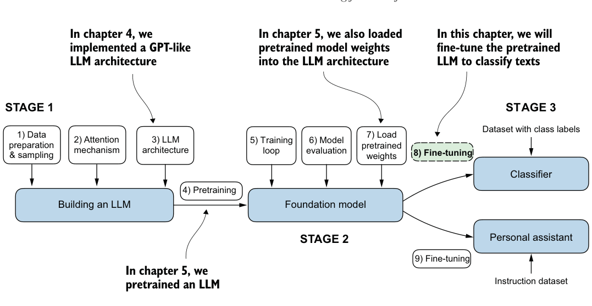
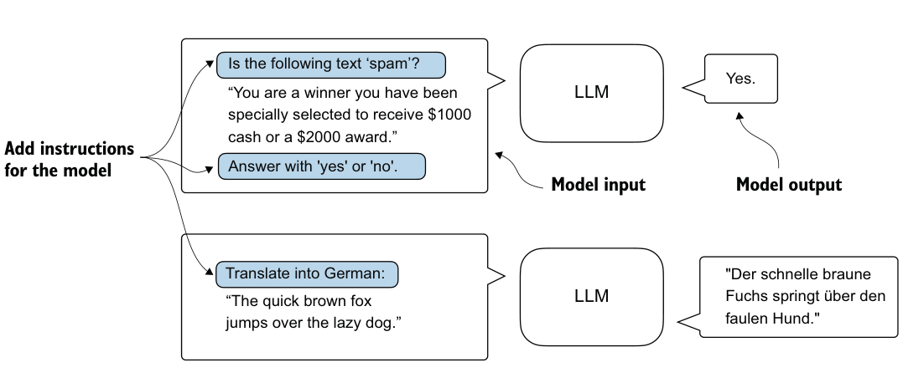
6.1 Different categories of fine-tuning#
The most common ways to fine-tune language models are instruction fine-tuning and classification fine-tuning. Instruction fine-tuning involves training a language model on a set of tasks using specific instructions to improve its ability to understand and execute tasks described in natural language prompts, as illustrated in figure 6.2.
In classification fine-tuning, a concept you might already be acquainted with if you have a background in machine learning, the model is trained to recognize a specific
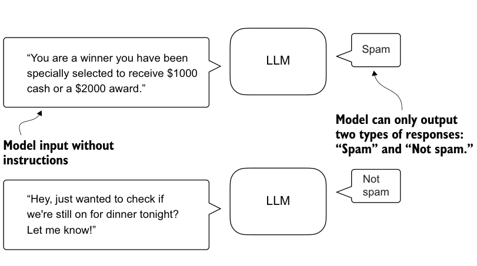
set of class labels, such as “spam” and “not spam.” Examples of classification tasks extend beyond LLMs and email filtering: they include identifying different species of plants from images; categorizing news articles into topics like sports, politics, and technology; and distinguishing between benign and malignant tumors in medical imaging.
The key point is that a classification fine-tuned model is restricted to predicting classes it has encountered during its training. For instance, it can determine whether something is “spam” or “not spam,” as illustrated in figure 6.3, but it can’t say anything else about the input text.
In contrast to the classification fine-tuned model depicted in figure 6.3, an instruction fine-tuned model typically can undertake a broader range of tasks. We can view a classification fine-tuned model as highly specialized, and generally, it is easier to develop a specialized model than a generalist model that works well across various tasks.
Choosing the right approach #
Instruction fine-tuning improves a model’s ability to understand and generate responses
based on specific user instructions. Instruction fine-tuning is best suited for models
that need to handle a variety of tasks based on complex user instructions, improving
flexibility and interaction quality. Classification fine-tuning is ideal for projects requir-
ing precise categorization of data into predefined classes, such as sentiment analy-
sis or spam detection.
While instruction fine-tuning is more versatile, it demands larger datasets and greater
computational resources to develop models proficient in various tasks. In contrast,
classification fine-tuning requires less data and compute power, but its use is con-
fined to the specific classes on which the model has been trained.
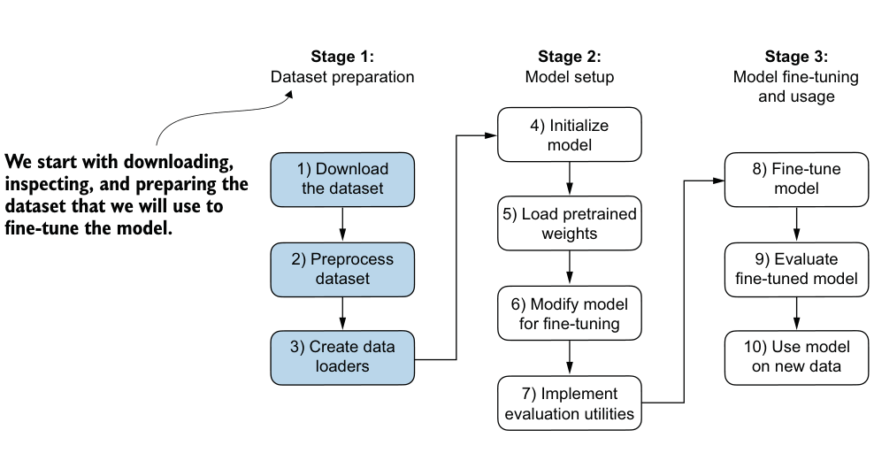
Listing 6.1Downloading and unzipping the dataset
6.2 Preparing the dataset#
We will modify and classification fine-tune the GPT model we previously implemented and pretrained. We begin by downloading and preparing the dataset, as highlighted in figure 6.4. To provide an intuitive and useful example of classification fine-tuning, we will work with a text message dataset that consists of spam and non-spam messages.
The first step is to download the dataset.
import urllib.request
import zipfile
import os
from pathlib import Path
url = "https://archive.ics.uci.edu/static/public/228/sms+spam+collection.zip"
zip_path = "sms_spam_collection.zip"
extracted_path = "sms_spam_collection"
data_file_path = Path(extracted_path) / "SMSSpamCollection.tsv"def download_and_unzip_spam_data(
url, zip_path, extracted_path, data_file_path):
if data_file_path.exists():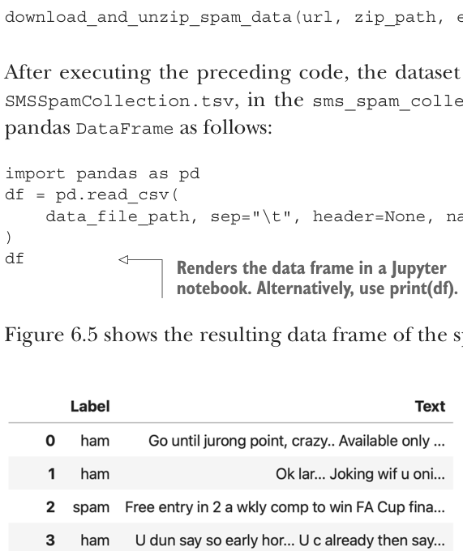
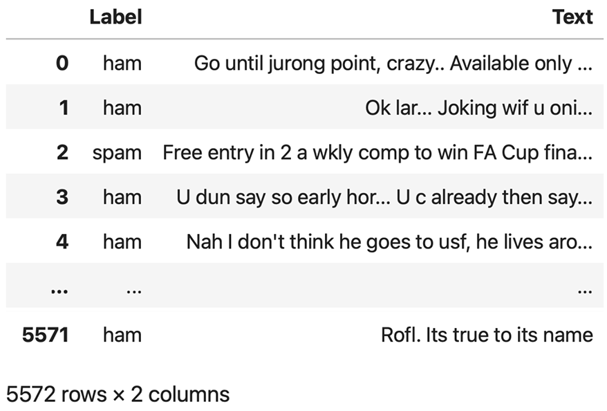
代码旁注 3 条
- Downloads the file
- Unzips the file
- Adds a .tsv file extension
print(f"{data_file_path} already exists. Skipping download "
"and extraction."
)
return
with urllib.request.urlopen(url) as response:
with open(zip_path, "wb") as out_file:
out_file.write(response.read())
with zipfile.ZipFile(zip_path, "r") as zip_ref:
zip_ref.extractall(extracted_path)
original_file_path = Path(extracted_path) / "SMSSpamCollection"
os.rename(original_file_path, data_file_path)
print(f"File downloaded and saved as {data_file_path}")download_and_unzip_spam_data(url, zip_path, extracted_path, data_file_path)After executing the preceding code, the dataset is saved as a tab-separated text file,
SMSSpamCollection.tsv, in the sms_spam_collection folder. We can load it into a data_file_path, sep="\t", header=None, names=["Label", "Text"]Figure 6.5 shows the resulting data frame of the spam dataset.
SMSSpamCollection datasetin a pandas DataFrame, showing class labels (“ham” or “spam”) and corresponding text messages. The dataset consists of 5,572 rows (text messages and labels).
Let’s examine the class label distribution:
print(df["Label"].value_counts())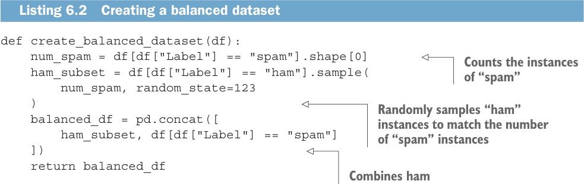
Listing 6.2Creating a balanced dataset
Executing the previous code, we find that the data contains “ham” (i.e., not spam) far more frequently than “spam”:
Label
ham 4825
spam 747
Name: count, dtype: int64For simplicity, and because we prefer a small dataset (which will facilitate faster finetuning of the LLM), we choose to undersample the dataset to include 747 instances from each class.
We can use the code in the following listing to undersample and create a balanced dataset.
代码旁注 3 条
- Counts the instances of “spam”
- Randomly samples “ham” instances to match the number of “spam” instances
- Combines ham
def create_balanced_dataset(df):
num_spam = df[df["Label"] == "spam"].shape[0]
ham_subset = df[df["Label"] == "ham"].sample(
num_spam, random_state=123
)
balanced_df = pd.concat([
ham_subset, df[df["Label"] == "spam"]
])
return balanced_df
balanced_df = create_balanced_dataset(df) subset with “spam”
print(balanced_df["Label"].value_counts())After executing the previous code to balance the dataset, we can see that we now have equal amounts of spam and non-spam messages:
Label
ham 747
spam 747
Name: count, dtype: int64Next, we convert the “string” class labels "ham" and "spam" into integer class labels 0 and 1, respectively:
balanced_df["Label"] = balanced_df["Label"].map({"ham": 0, "spam": 1})This process is similar to converting text into token IDs. However, instead of using the GPT vocabulary, which consists of more than 50,000 words, we are dealing with just two token IDs: 0 and 1.
Listing 6.3Splitting the dataset
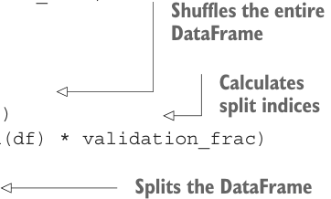
- Truncate all messages to the length of the shortest message in the dataset or batch.
- Pad all messages to the length of the longest message in the dataset or batch. The first option is computationally cheaper, but it may result in significant information loss if shorter messages are much smaller than the average or longest messages,
Next, we create a random_split function to split the dataset into three parts: 70% for training, 10% for validation, and 20% for testing. (These ratios are common in machine learning to train, adjust, and evaluate models.)
def random_split(df, train_frac, validation_frac):代码旁注 4 条
- Shuffles the entire DataFrame
- Calculates split indices
- Splits the DataFrame
- Test size is implied to be 0.2 as the remainder.
df = df.sample(
frac=1, random_state=123
).reset_index(drop=True)
train_end = int(len(df) * train_frac)
validation_end = train_end + int(len(df) * validation_frac)
train_df = df[:train_end]
validation_df = df[train_end:validation_end]
test_df = df[validation_end:]
return train_df, validation_df, test_df
train_df, validation_df, test_df = random_split( balanced_df, 0.7, 0.1)Let’s save the dataset as CSV (comma-separated value) files so we can reuse it later:
train_df.to_csv("train.csv", index=None)
validation_df.to_csv("validation.csv", index=None)
test_df.to_csv("test.csv", index=None)Thus far, we have downloaded the dataset, balanced it, and split it into training and evaluation subsets. Now we will set up the PyTorch data loaders that will be used to train the model.
6.3 Creating data loaders#
We will develop PyTorch data loaders conceptually similar to those we implemented while working with text data. Previously, we utilized a sliding window technique to generate uniformly sized text chunks, which we then grouped into batches for more efficient model training. Each chunk functioned as an individual training instance. However, we are now working with a spam dataset that contains text messages of varying lengths. To batch these messages as we did with the text chunks, we have two primary options:
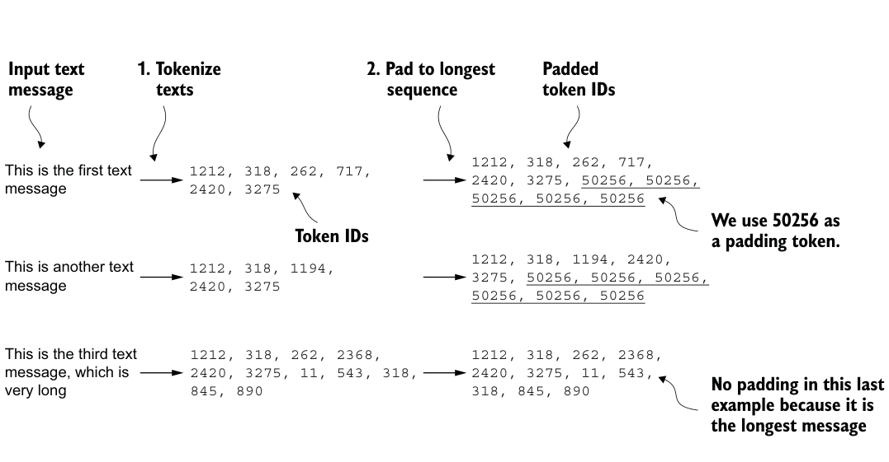
potentially reducing model performance. So, we opt for the second option, which preserves the entire content of all messages.
To implement batching, where all messages are padded to the length of the longest message in the dataset, we add padding tokens to all shorter messages. For this purpose, we use "<|endoftext|>" as a padding token.
However, instead of appending the string "<|endoftext|>" to each of the text messages directly, we can add the token ID corresponding to "<|endoftext|>" to the encoded text messages, as illustrated in figure 6.6. 50256 is the token ID of the padding token "<|endoftext|>". We can double-check whether the token ID is correct by encoding the "<|endoftext|>" using the GPT-2 tokenizer from the tiktoken package that we used previously:
import tiktoken
tokenizer = tiktoken.get_encoding("gpt2")
print(tokenizer.encode("<|endoftext|>", allowed_special={"<|endoftext|>"}))Indeed, executing the preceding code returns [50256].
We first need to implement a PyTorch Dataset, which specifies how the data is loaded and processed before we can instantiate the data loaders. For this purpose, we define the SpamDataset class, which implements the concepts in figure 6.6. This SpamDataset class handles several key tasks: it identifies the longest sequence in the training dataset, encodes the text messages, and ensures that all other sequences are padded with a padding token to match the length of the longest sequence.
Setting up a Pytorch Dataset class Listing 6.4
代码旁注 3 条
- Pretokenizes texts
- Truncates sequences if they are longer than max_length
- Pads sequences to the longest sequence
import torch
from torch.utils.data import Dataset
class SpamDataset(Dataset):
def __init__(self, csv_file, tokenizer, max_length=None,
pad_token_id=50256):
self.data = pd.read_csv(csv_file)
self.encoded_texts = [
tokenizer.encode(text) for text in self.data["Text"]
]
if max_length is None:
self.max_length = self._longest_encoded_length()
else:
self.max_length = max_length
self.encoded_texts = [
encoded_text[:self.max_length]
for encoded_text in self.encoded_texts
]
self.encoded_texts = [
encoded_text + [pad_token_id] *
(self.max_length - len(encoded_text))
for encoded_text in self.encoded_texts
] def __getitem__(self, index):
encoded = self.encoded_texts[index]
label = self.data.iloc[index]["Label"]
return (
torch.tensor(encoded, dtype=torch.long),
torch.tensor(label, dtype=torch.long)
)
def __len__(self):
return len(self.data)
def _longest_encoded_length(self):
max_length = 0
for encoded_text in self.encoded_texts:
encoded_length = len(encoded_text)
if encoded_length > max_length:
max_length = encoded_length
return max_lengthThe SpamDataset class loads data from the CSV files we created earlier, tokenizes the text using the GPT-2 tokenizer from tiktoken, and allows us to pad or truncate the sequences to a uniform length determined by either the longest sequence or a predefined maximum length. This ensures each input tensor is of the same size, which is necessary to create the batches in the training data loader we implement next:
train_dataset = SpamDataset(
csv_file="train.csv",
max_length=None,
tokenizer=tokenizer
)The longest sequence length is stored in the dataset’s max_length attribute. If you are curious to see the number of tokens in the longest sequence, you can use the following code:
print(train_dataset.max_length)The code outputs 120, showing that the longest sequence contains no more than 120 tokens, a common length for text messages. The model can handle sequences of up to 1,024 tokens, given its context length limit. If your dataset includes longer texts, you can pass max_length=1024 when creating the training dataset in the preceding code to ensure that the data does not exceed the model’s supported input (context) length.
Next, we pad the validation and test sets to match the length of the longest training sequence. Importantly, any validation and test set samples exceeding the length of the longest training example are truncated using encoded_text[:self.max_length] in the SpamDataset code we defined earlier. This truncation is optional; you can set max_length=None for both validation and test sets, provided there are no sequences exceeding 1,024 tokens in these sets:
val_dataset = SpamDataset(
csv_file="validation.csv",
max_length=train_dataset.max_length,
tokenizer=tokenizer
)
test_dataset = SpamDataset(
csv_file="test.csv",
max_length=train_dataset.max_length,
tokenizer=tokenizer
)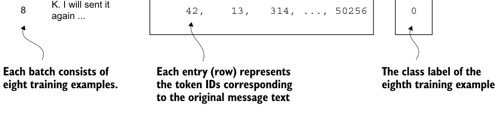
Exercise 6.1 Increasing the context length #
Pad the inputs to the maximum number of tokens the model supports and observe
how it affects the predictive performance.
Using the datasets as inputs, we can instantiate the data loaders similarly to when we were working with text data. However, in this case, the targets represent class labels rather than the next tokens in the text. For instance, if we choose a batch size of 8, each batch will consist of eight training examples of length 120 and the corresponding class label of each example, as illustrated in figure 6.7.
代码旁注 3 条
- Class label array, where 1
- Each text message ispadded to 120 tokens.
- Original message text stands for “spam” and 0 for “ham” (not spam)
2953, 644, 640, ..., 50256
055, 31180, 15895, ..., 50256
120266, 40621, 15762, ..., 50256
142, 13, 314, ..., 50256
0Figure 6.7 A single training batch consisting of eight text messages represented as token IDs. Each text message consists of 120 token IDs. A class label array stores the eight class labels corresponding to the text messages, which can be either 0 (“not spam”) or 1 (“spam”).
Listing 6.5Creating PyTorch data loaders
The code in the following listing creates the training, validation, and test set data loaders that load the text messages and labels in batches of size 8.
代码旁注 1 条
- This setting ensures compatibility with most computers.
from torch.utils.data import DataLoader
num_workers = 0
batch_size = 8
torch.manual_seed(123)
train_loader = DataLoader(
dataset=train_dataset,
batch_size=batch_size,
shuffle=True,
num_workers=num_workers,
drop_last=True,
)
val_loader = DataLoader(
dataset=val_dataset,
batch_size=batch_size,
num_workers=num_workers,
drop_last=False,
)
test_loader = DataLoader(
dataset=test_dataset,
batch_size=batch_size,
num_workers=num_workers,
drop_last=False,
)To ensure that the data loaders are working and are, indeed, returning batches of the expected size, we iterate over the training loader and then print the tensor dimensions of the last batch:
for input_batch, target_batch in train_loader:
pass
print("Input batch dimensions:", input_batch.shape)
print("Label batch dimensions", target_batch.shape)The output is
Input batch dimensions: torch.Size([8, 120])
Label batch dimensions torch.Size([8])As we can see, the input batches consist of eight training examples with 120 tokens each, as expected. The label tensor stores the class labels corresponding to the eight training examples.
Lastly, to get an idea of the dataset size, let’s print the total number of batches in each dataset:
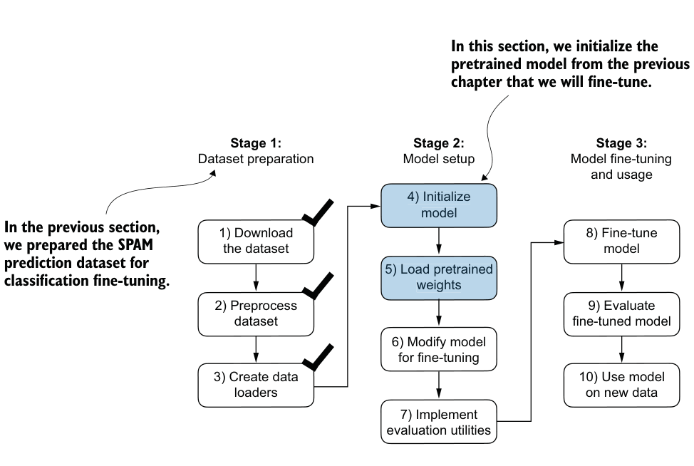
print(f"{len(train_loader)} training batches")
print(f"{len(val_loader)} validation batches")
print(f"{len(test_loader)} test batches")The number of batches in each dataset are
130 training batches
19 validation batches
38 test batchesNow that we’ve prepared the data, we need to prepare the model for fine-tuning.
6.4 Initializing a model with pretrained weights#
We must prepare the model for classification fine-tuning to identify spam messages. We start by initializing our pretrained model, as highlighted in figure 6.8.
To begin the model preparation process, we employ the same configurations we used to pretrain unlabeled data:
CHOOSE_MODEL = "gpt2-small (124M)"
INPUT_PROMPT = "Every effort moves"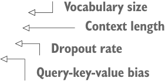
Listing 6.6Loading a pretrained GPT model
BASE_CONFIG = {代码旁注 4 条
- Vocabulary size
- Context length
- Dropout rate
- Query-key-value bias
"vocab_size": 50257,
"context_length": 1024,
"drop_rate": 0.0,
"qkv_bias": True
}
model_configs = {
"gpt2-small (124M)": {"emb_dim": 768, "n_layers": 12, "n_heads": 12},
"gpt2-medium (355M)": {"emb_dim": 1024, "n_layers": 24, "n_heads": 16},
"gpt2-large (774M)": {"emb_dim": 1280, "n_layers": 36, "n_heads": 20},
"gpt2-xl (1558M)": {"emb_dim": 1600, "n_layers": 48, "n_heads": 25},
}
BASE_CONFIG.update(model_configs[CHOOSE_MODEL])Next, we import the download_and_load_gpt2 function from the gpt_download.py file and reuse the GPTModel class and load_weights_into_gpt function from pretraining (see chapter 5) to load the downloaded weights into the GPT model.
from gpt_download import download_and_load_gpt2
from chapter05 import GPTModel, load_weights_into_gpt
model_size = CHOOSE_MODEL.split(" ")[-1].lstrip("(").rstrip(")")
settings, params = download_and_load_gpt2(
model_size=model_size, models_dir="gpt2"
)
model = GPTModel(BASE_CONFIG)
load_weights_into_gpt(model, params)
model.eval()After loading the model weights into the GPTModel, we reuse the text generation utility function from chapters 4 and 5 to ensure that the model generates coherent text:
from chapter04 import generate_text_simple
from chapter05 import text_to_token_ids, token_ids_to_text
text_1 = "Every effort moves you"
token_ids = generate_text_simple(
model=model,
idx=text_to_token_ids(text_1, tokenizer),
max_new_tokens=15,
context_size=BASE_CONFIG["context_length"]
)
print(token_ids_to_text(token_ids, tokenizer))The following output shows the model generates coherent text, which is indicates that the model weights have been loaded correctly:
Every effort moves you forward.
The first step is to understand the importance of your workBefore we start fine-tuning the model as a spam classifier, let’s see whether the model already classifies spam messages by prompting it with instructions:
text_2 = (
"Is the following text 'spam'? Answer with 'yes' or 'no':"
" 'You are a winner you have been specially"
" selected to receive $1000 cash or a $2000 award.'"
)
token_ids = generate_text_simple(
model=model,
idx=text_to_token_ids(text_2, tokenizer),
max_new_tokens=23,
context_size=BASE_CONFIG["context_length"]
)
print(token_ids_to_text(token_ids, tokenizer))The model output is
Is the following text 'spam'? Answer with 'yes' or 'no': 'You are a winner
you have been specially selected to receive $1000 cash
or a $2000 award.'
The following text 'spam'? Answer with 'yes' or 'no': 'You are a winnerBased on the output, it’s apparent that the model is struggling to follow instructions. This result is expected, as it has only undergone pretraining and lacks instruction fine-tuning. So, let’s prepare the model for classification fine-tuning.
6.5 Adding a classification head#
We must modify the pretrained LLM to prepare it for classification fine-tuning. To do so, we replace the original output layer, which maps the hidden representation to a vocabulary of 50,257, with a smaller output layer that maps to two classes: 0 (“not spam”) and 1 (“spam”), as shown in figure 6.9. We use the same model as before, except we replace the output layer.
Output layer nodes #
We could technically use a single output node since we are dealing with a binary clas-
sification task. However, it would require modifying the loss function, as I discuss in
“Losses Learned—Optimizing Negative Log-Likelihood and Cross-Entropy in PyTorch”
(https://mng.bz/NRZ2). Therefore, we choose a more general approach, where the
number of output nodes matches the number of classes. For example, for a three-
class problem, such as classifying news articles as “Technology,” “Sports,” or “Pol-
itics,” we would use three output nodes, and so forth.
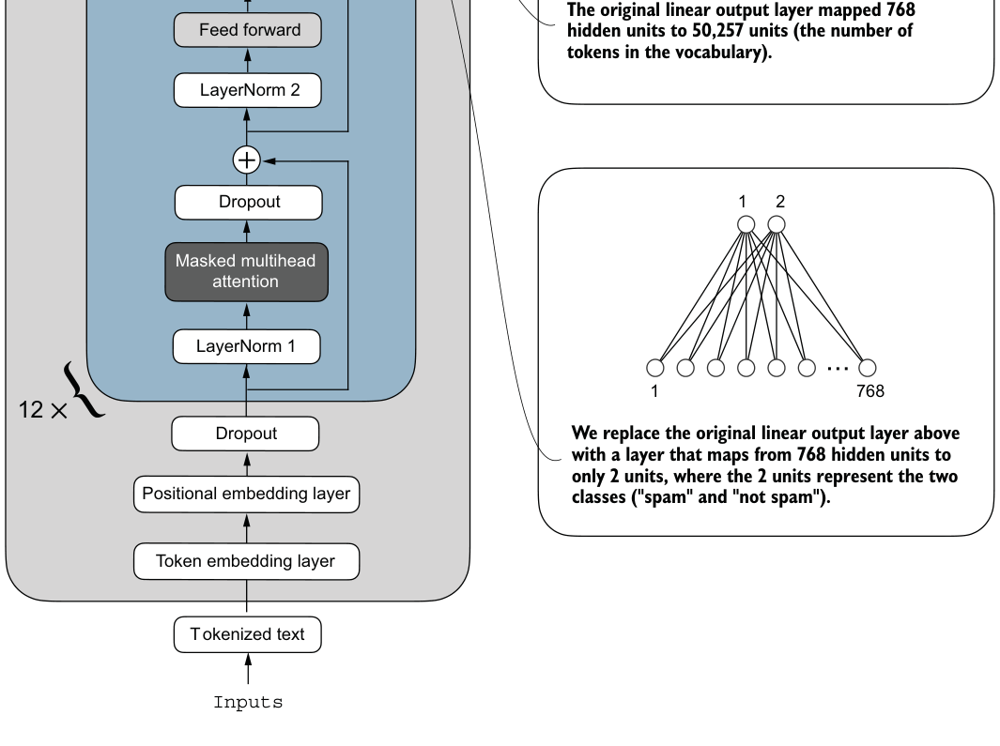
代码旁注 1 条
- The GPT model we implemented in chapter 5 and loaded in the previous section
OutputsmodelGPT
Figure 6.9 Adapting a GPT model for spam classification by altering its architecture. Initially, the model’s linear output layer mapped 768 hidden units to a vocabulary of 50,257 tokens. To detect spam, we replace this layer with a new output layer that maps the same 768 hidden units to just two classes, representing “spam” and “not spam.”
Before we attempt the modification shown in figure 6.9, let’s print the model architec-
ture via print(model):
GPTModel(
(tok_emb): Embedding(50257, 768)
(pos_emb): Embedding(1024, 768)
(drop_emb): Dropout(p=0.0, inplace=False)
(trf_blocks): Sequential(
...
(11): TransformerBlock(
(att): MultiHeadAttention(
(W_query): Linear(in_features=768, out_features=768, bias=True)
(W_key): Linear(in_features=768, out_features=768, bias=True)
(W_value): Linear(in_features=768, out_features=768, bias=True)
(out_proj): Linear(in_features=768, out_features=768, bias=True)
(dropout): Dropout(p=0.0, inplace=False)
)
(ff): FeedForward(
(layers): Sequential(
(0): Linear(in_features=768, out_features=3072, bias=True)
(1): GELU()
(2): Linear(in_features=3072, out_features=768, bias=True)
)
)
(norm1): LayerNorm()
(norm2): LayerNorm()
(drop_resid): Dropout(p=0.0, inplace=False)
)
)
(final_norm): LayerNorm()
(out_head): Linear(in_features=768, out_features=50257, bias=False)
)This output neatly lays out the architecture we laid out in chapter 4. As previously discussed, the GPTModel consists of embedding layers followed by 12 identical transformer blocks (only the last block is shown for brevity), followed by a final LayerNorm and the output layer, out_head.
Next, we replace the out_head with a new output layer (see figure 6.9) that we will fine-tune.
Fine-tuning selected layers vs. all layers#
Since we start with a pretrained model, it’s not necessary to fine-tune all model layers.
In neural network-based language models, the lower layers generally capture basic lan-
guage structures and semantics applicable across a wide range of tasks and datasets.
So, fine-tuning only the last layers (i.e., layers near the output), which are more specific
to nuanced linguistic patterns and task-specific features, is often sufficient to adapt the
model to new tasks. A nice side effect is that it is computationally more efficient to fine-
tune only a small number of layers. Interested readers can find more information,
including experiments, on which layers to fine-tune in appendix B.
Listing 6.7Adding a classification layer
To get the model ready for classification fine-tuning, we first freeze the model, meaning that we make all layers nontrainable:
for param in model.parameters():
param.requires_grad = FalseThen, we replace the output layer (model.out_head), which originally maps the layer inputs to 50,257 dimensions, the size of the vocabulary (see figure 6.9).
torch.manual_seed(123)
num_classes = 2
model.out_head = torch.nn.Linear(
in_features=BASE_CONFIG["emb_dim"],
out_features=num_classes
)To keep the code more general, we use BASE_CONFIG["emb_dim"], which is equal to 768 in the "gpt2-small (124M)" model. Thus, we can also use the same code to work with the larger GPT-2 model variants.
This new model.out_head output layer has its requires_grad attribute set to True by default, which means that it’s the only layer in the model that will be updated during training. Technically, training the output layer we just added is sufficient. However, as I found in experiments, fine-tuning additional layers can noticeably improve the predictive performance of the model. (For more details, refer to appendix B.) We also configure the last transformer block and the final LayerNorm module, which connects this block to the output layer, to be trainable, as depicted in figure 6.10.
To make the final LayerNorm and last transformer block trainable, we set their
respective requires_grad to True:
for param in model.trf_blocks[-1].parameters():
param.requires_grad = True
for param in model.final_norm.parameters():
param.requires_grad = TrueExercise 6.2 Fine-tuning the whole model #
Instead of fine-tuning just the final transformer block, fine-tune the entire model and
assess the effect on predictive performance.
Even though we added a new output layer and marked certain layers as trainable or nontrainable, we can still use this model similarly to how we have previously. For
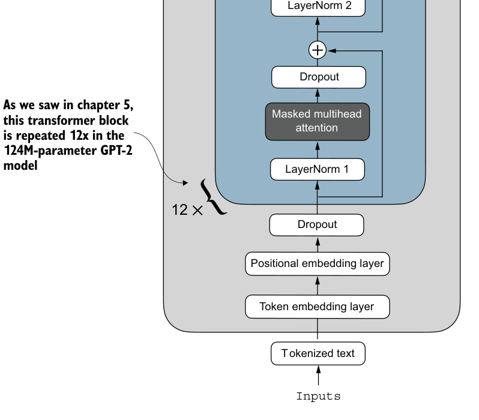
代码旁注 4 条
- The GPT model we We make the output layer,
- implemented in chapter 5 final LayerNorm, and the last
- and loaded in the previous transformer block trainable
- section
OutputsmodelGPT
Transformer block
LayerNorm and the last transformer block as trainable. The remaining 11 transformer blocks and the embedding
layers are kept nontrainable.
instance, we can feed it an example text identical to our previously used example text:
代码旁注 1 条
- shape: (batch_size, num_tokens)
inputs = tokenizer.encode("Do you have time")
inputs = torch.tensor(inputs).unsqueeze(0)
print("Inputs:", inputs)
print("Inputs dimensions:", inputs.shape)The print output shows that the preceding code encodes the inputs into a tensor consisting of four input tokens:
Inputs: tensor([[5211, 345, 423, 640]])
Inputs dimensions: torch.Size([1, 4])Then, we can pass the encoded token IDs to the model as usual:
with torch.no_grad():
outputs = model(inputs)
print("Outputs:\n", outputs)
print("Outputs dimensions:", outputs.shape)The output tensor looks like the following:
Outputs:
tensor([[[-1.5854, 0.9904],
[-3.7235, 7.4548],
[-2.2661, 6.6049],
[-3.5983, 3.9902]]])
Outputs dimensions: torch.Size([1, 4, 2])A similar input would have previously produced an output tensor of [1, 4, 50257], where 50257 represents the vocabulary size. The number of output rows corresponds to the number of input tokens (in this case, four). However, each output’s embedding dimension (the number of columns) is now 2 instead of 50,257 since we replaced the output layer of the model.
Remember that we are interested in fine-tuning this model to return a class label indicating whether a model input is “spam” or “not spam.” We don’t need to finetune all four output rows; instead, we can focus on a single output token. In particular, we will focus on the last row corresponding to the last output token, as shown in figure 6.11.
To extract the last output token from the output tensor, we use the following code:
print("Last output token:", outputs[:, -1, :])This prints
Last output token: tensor([[-3.5983, 3.9902]])We still need to convert the values into a class-label prediction. But first, let’s understand why we are particularly interested in the last output token only.
We have already explored the attention mechanism, which establishes a relationship between each input token and every other input token, and the concept of a causal attention mask, commonly used in GPT-like models (see chapter 3). This mask restricts a
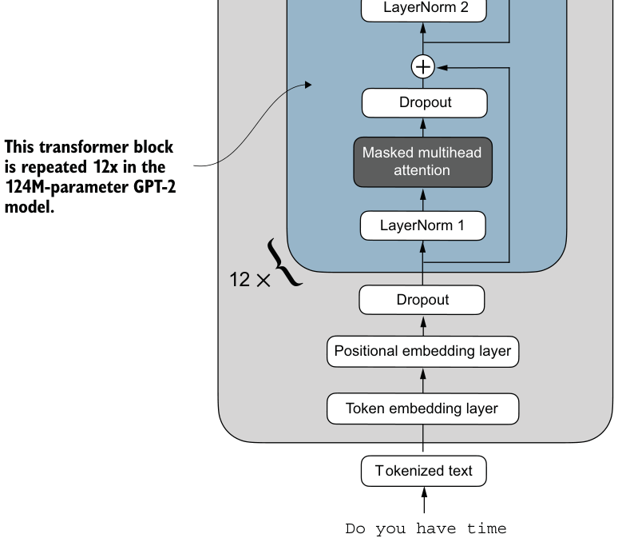
代码旁注 5 条
- A 4 × 2–dimensional tensor
- The last row corresponds
- The number of rows correspondsto the number of input tokens, to the last token.
- as discussed in chapter 4.
- The GPT model we implemented in chapter 5 and loaded in the previous section
[[-1.5854, 0.9904],
[-3.7235, 7.4548],
[-2.2661, 6.6049],
[-3.5983, 3.9902]]modelGPT
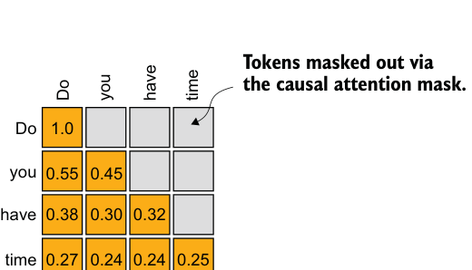
token’s focus to its current position and the those before it, ensuring that each token can only be influenced by itself and the preceding tokens, as illustrated in figure 6.12.
time, is the only one that computes
attention scores for all preceding tokens.
Given the causal attention mask setup in figure 6.12, the last token in a sequence accumulates the most information since it is the only token with access to data from all the previous tokens. Therefore, in our spam classification task, we focus on this last token during the fine-tuning process.
We are now ready to transform the last token into class label predictions and calculate the model’s initial prediction accuracy. Subsequently, we will fine-tune the model for the spam classification task.
Exercise 6.3 Fine-tuning the first vs. last token #
Try fine-tuning the first output token. Notice the changes in predictive performance
compared to fine-tuning the last output token.
6.6 Calculating the classification loss and accuracy#
Only one small task remains before we fine-tune the model: we must implement the model evaluation functions used during fine-tuning, as illustrated in figure 6.13.
Before implementing the evaluation utilities, let’s briefly discuss how we convert the model outputs into class label predictions. We previously computed the token ID of the next token generated by the LLM by converting the 50,257 outputs into probabilities via the softmax function and then returning the position of the highest probability via the argmax function. We take the same approach here to calculate whether the model outputs a “spam” or “not spam” prediction for a given input, as shown in figure 6.14. The only difference is that we work with 2-dimensional instead of 50,257dimensional outputs.
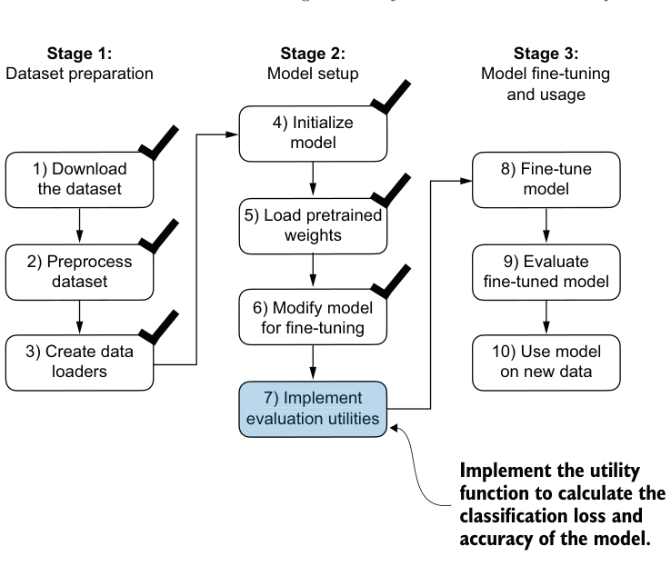
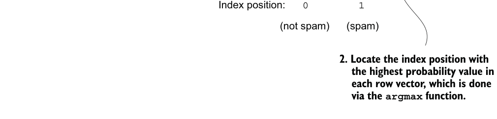
代码旁注 7 条
- Input text
- Outputs corresponding
- 1. Convert outputs to
- The predicted
- message to the last row (token)
- softmax probabilities.
- labels
[ 0.99, 0.01 ]10LLM
[ 3.5983, -3.9902 ][ 0.01, 0.99 ]11LLM
[ -3.9846, 5.2940 ]0 1Figure 6.14 The model outputs corresponding to the last token are converted into probability scores for each input text. The class labels are obtained by looking up the index position of the highest probability score. The model predicts the spam labels incorrectly because it has not yet been trained.
Listing 6.8Calculating the classification accuracy
Let’s consider the last token output using a concrete example:
print("Last output token:", outputs[:, -1, :])
The values of the tensor corresponding to the last token are
Last output token: tensor([[-3.5983, 3.9902]])
We can obtain the class label:
probas = torch.softmax(outputs[:, -1, :], dim=-1)
label = torch.argmax(probas)
print("Class label:", label.item())In this case, the code returns 1, meaning the model predicts that the input text is “spam.” Using the softmax function here is optional because the largest outputs directly correspond to the highest probability scores. Hence, we can simplify the code without using softmax:
logits = outputs[:, -1, :]
label = torch.argmax(logits)
print("Class label:", label.item())This concept can be used to compute the classification accuracy, which measures the percentage of correct predictions across a dataset.
To determine the classification accuracy, we apply the argmax-based prediction code to all examples in the dataset and calculate the proportion of correct predictions by defining a calc_accuracy_loader function.
def calc_accuracy_loader(data_loader, model, device, num_batches=None):
model.eval()
correct_predictions, num_examples = 0, 0
if num_batches is None:
num_batches = len(data_loader)
else:
num_batches = min(num_batches, len(data_loader))
for i, (input_batch, target_batch) in enumerate(data_loader):
if i < num_batches:
input_batch = input_batch.to(device)
target_batch = target_batch.to(device)代码旁注 1 条
- Logits of last output token
with torch.no_grad(): logits = model(input_batch)[:, -1, :]
predicted_labels = torch.argmax(logits, dim=-1)
num_examples += predicted_labels.shape[0]
correct_predictions += (
(predicted_labels == target_batch).sum().item()
)
else:
break
return correct_predictions / num_examplesLet’s use the function to determine the classification accuracies across various datasets estimated from 10 batches for efficiency:
device = torch.device("cuda" if torch.cuda.is_available() else "cpu")
model.to(device)
torch.manual_seed(123)
train_accuracy = calc_accuracy_loader(
train_loader, model, device, num_batches=10
)
val_accuracy = calc_accuracy_loader(
val_loader, model, device, num_batches=10
)
test_accuracy = calc_accuracy_loader(
test_loader, model, device, num_batches=10
)
print(f"Training accuracy: {train_accuracy*100:.2f}%")
print(f"Validation accuracy: {val_accuracy*100:.2f}%")
print(f"Test accuracy: {test_accuracy*100:.2f}%")Via the device setting, the model automatically runs on a GPU if a GPU with Nvidia CUDA support is available and otherwise runs on a CPU. The output is
Training accuracy: 46.25%
Validation accuracy: 45.00%
Test accuracy: 48.75%As we can see, the prediction accuracies are near a random prediction, which would be 50% in this case. To improve the prediction accuracies, we need to fine-tune the model.
However, before we begin fine-tuning the model, we must define the loss function we will optimize during training. Our objective is to maximize the spam classification accuracy of the model, which means that the preceding code should output the correct class labels: 0 for non-spam and 1 for spam.
Because classification accuracy is not a differentiable function, we use crossentropy loss as a proxy to maximize accuracy. Accordingly, the calc_loss_batch function remains the same, with one adjustment: we focus on optimizing only the last
代码旁注 1 条
- Logits of last output token
token, model(input_batch)[:, -1, :], rather than all tokens, model(input_batch):
def calc_loss_batch(input_batch, target_batch, model, device):
input_batch = input_batch.to(device)
target_batch = target_batch.to(device)
logits = model(input_batch)[:, -1, :]Listing 6.9Calculating the classification loss
loss = torch.nn.functional.cross_entropy(logits, target_batch)
return lossWe use the calc_loss_batch function to compute the loss for a single batch obtained from the previously defined data loaders. To calculate the loss for all batches in a data loader, we define the calc_loss_loader function as before.
代码旁注 1 条
- Ensures number of batches doesn’t exceed batches in data loader
def calc_loss_loader(data_loader, model, device, num_batches=None):
total_loss = 0.
if len(data_loader) == 0:
return float("nan")
elif num_batches is None:
num_batches = len(data_loader)
else:
num_batches = min(num_batches, len(data_loader))
for i, (input_batch, target_batch) in enumerate(data_loader):
if i < num_batches:
loss = calc_loss_batch(
input_batch, target_batch, model, device
)
total_loss += loss.item()
else:
break
return total_loss / num_batchesSimilar to calculating the training accuracy, we now compute the initial loss for each data set:
代码旁注 1 条
- Disables gradient tracking for efficiency because we are not training yet
with torch.no_grad():
train_loss = calc_loss_loader(
train_loader, model, device, num_batches=5
)
val_loss = calc_loss_loader(val_loader, model, device, num_batches=5)
test_loss = calc_loss_loader(test_loader, model, device, num_batches=5)
print(f"Training loss: {train_loss:.3f}")
print(f"Validation loss: {val_loss:.3f}")
print(f"Test loss: {test_loss:.3f}")The initial loss values are
Training loss: 2.453
Validation loss: 2.583
Test loss: 2.322Next, we will implement a training function to fine-tune the model, which means adjusting the model to minimize the training set loss. Minimizing the training set loss will help increase the classification accuracy, which is our overall goal.
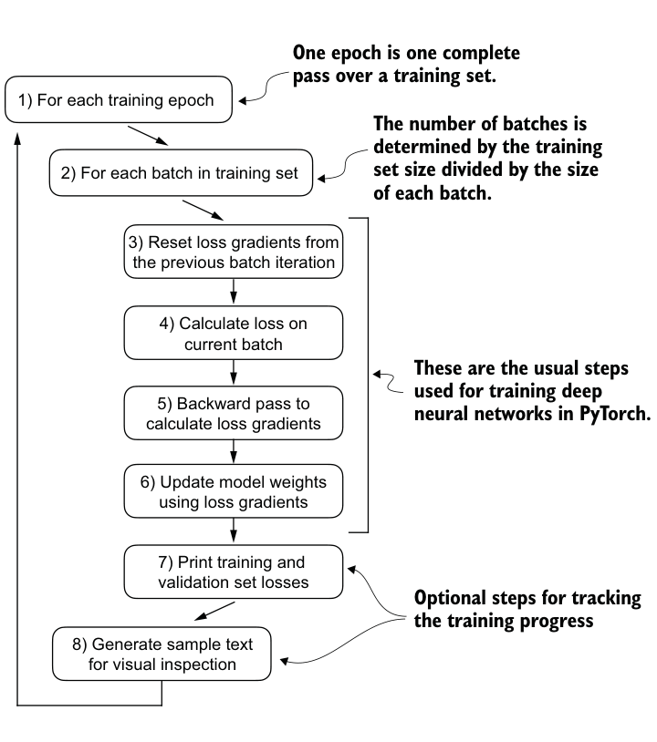
6.7 Fine-tuning the model on supervised data#
We must define and use the training function to fine-tune the pretrained LLM and improve its spam classification accuracy. The training loop, illustrated in figure 6.15, is the same overall training loop we used for pretraining; the only difference is that we calculate the classification accuracy instead of generating a sample text to evaluate the model.
The training function implementing the concepts shown in figure 6.15 also closely mirrors the train_model_simple function used for pretraining the model. The only two distinctions are that we now track the number of training examples seen (examples_seen) instead of the number of tokens, and we calculate the accuracy after each epoch instead of printing a sample text.
Listing 6.10Fine-tuning the model to classify spam
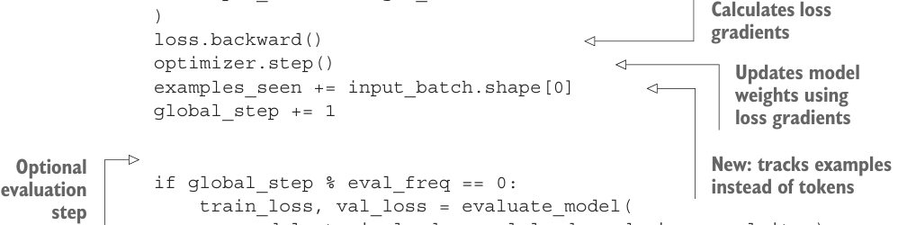
代码旁注 3 条
- Initialize lists to track losses and examples seen
- Main training loop
- Sets model to training mode
def train_classifier_simple(
model, train_loader, val_loader, optimizer, device,
num_epochs, eval_freq, eval_iter):
train_losses, val_losses, train_accs, val_accs = [], [], [], []
examples_seen, global_step = 0, -1
for epoch in range(num_epochs): model.train()代码旁注 1 条
- Resets loss gradients from the previous batch iteration
for input_batch, target_batch in train_loader:
optimizer.zero_grad()
loss = calc_loss_batch(
input_batch, target_batch, model, device代码旁注 6 条
- Calculates loss gradients
- Updates model weights using loss gradients
- New: tracks examples
- Optional instead of tokens
- evaluation step
- Calculates accuracy after each epoch
)
loss.backward()
optimizer.step()
examples_seen += input_batch.shape[0]
global_step += 1
if global_step % eval_freq == 0:
train_loss, val_loss = evaluate_model(
model, train_loader, val_loader, device, eval_iter)
train_losses.append(train_loss)
val_losses.append(val_loss)
print(f"Ep {epoch+1} (Step {global_step:06d}): "
f"Train loss {train_loss:.3f}, "
f"Val loss {val_loss:.3f}"
)
train_accuracy = calc_accuracy_loader(
train_loader, model, device, num_batches=eval_iter
)
val_accuracy = calc_accuracy_loader(
val_loader, model, device, num_batches=eval_iter
)
print(f"Training accuracy: {train_accuracy*100:.2f}% | ", end="")
print(f"Validation accuracy: {val_accuracy*100:.2f}%")
train_accs.append(train_accuracy)
val_accs.append(val_accuracy)
return train_losses, val_losses, train_accs, val_accs, examples_seenThe evaluate_model function is identical to the one we used for pretraining:
def evaluate_model(model, train_loader, val_loader, device, eval_iter):
model.eval()
with torch.no_grad():
train_loss = calc_loss_loader(
train_loader, model, device, num_batches=eval_iter
)
val_loss = calc_loss_loader(
val_loader, model, device, num_batches=eval_iter
)
model.train()
return train_loss, val_lossNext, we initialize the optimizer, set the number of training epochs, and initiate the training using the train_classifier_simple function. The training takes about 6 minutes on an M3 MacBook Air laptop computer and less than half a minute on a V100 or A100 GPU:
import time
start_time = time.time()
torch.manual_seed(123)
optimizer = torch.optim.AdamW(model.parameters(), lr=5e-5, weight_decay=0.1)
num_epochs = 5
train_losses, val_losses, train_accs, val_accs, examples_seen = \
train_classifier_simple(
model, train_loader, val_loader, optimizer, device,
num_epochs=num_epochs, eval_freq=50,
eval_iter=5
)
end_time = time.time()
execution_time_minutes = (end_time - start_time) / 60
print(f"Training completed in {execution_time_minutes:.2f} minutes.")The output we see during the training is as follows:
Ep 1 (Step 000000): Train loss 2.153, Val loss 2.392
Ep 1 (Step 000050): Train loss 0.617, Val loss 0.637
Ep 1 (Step 000100): Train loss 0.523, Val loss 0.557
Training accuracy: 70.00% | Validation accuracy: 72.50%
Ep 2 (Step 000150): Train loss 0.561, Val loss 0.489
Ep 2 (Step 000200): Train loss 0.419, Val loss 0.397
Ep 2 (Step 000250): Train loss 0.409, Val loss 0.353
Training accuracy: 82.50% | Validation accuracy: 85.00%
Ep 3 (Step 000300): Train loss 0.333, Val loss 0.320
Ep 3 (Step 000350): Train loss 0.340, Val loss 0.306
Training accuracy: 90.00% | Validation accuracy: 90.00%
Ep 4 (Step 000400): Train loss 0.136, Val loss 0.200
Ep 4 (Step 000450): Train loss 0.153, Val loss 0.132
Ep 4 (Step 000500): Train loss 0.222, Val loss 0.137
Training accuracy: 100.00% | Validation accuracy: 97.50%
Ep 5 (Step 000550): Train loss 0.207, Val loss 0.143
Ep 5 (Step 000600): Train loss 0.083, Val loss 0.074
Training accuracy: 100.00% | Validation accuracy: 97.50%
Training completed in 5.65 minutes.Listing 6.11Plotting the classification loss
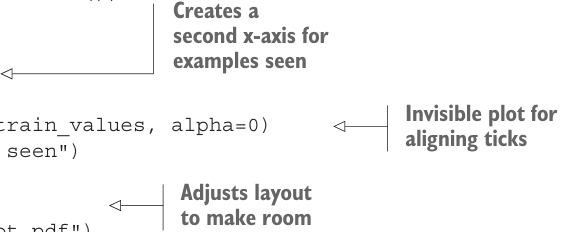
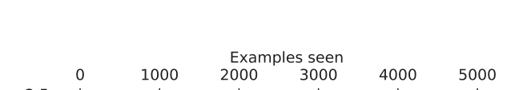
We then use Matplotlib to plot the loss function for the training and validation set.
代码旁注 2 条
- Plots training and validation loss
- against epochs
import matplotlib.pyplot as plt
def plot_values(
epochs_seen, examples_seen, train_values, val_values,
label="loss"):
fig, ax1 = plt.subplots(figsize=(5, 3))
ax1.plot(epochs_seen, train_values, label=f"Training {label}")
ax1.plot(
epochs_seen, val_values, linestyle="-.",
label=f"Validation {label}"
)
ax1.set_xlabel("Epochs")
ax1.set_ylabel(label.capitalize())代码旁注 4 条
- Creates a second x-axis for
- examples seen
- Invisible plot for aligning ticks
- Adjusts layout to make room
ax1.legend()
ax2 = ax1.twiny()
ax2.plot(examples_seen, train_values, alpha=0)
ax2.set_xlabel("Examples seen")
fig.tight_layout() plt.savefig(f"{label}-plot.pdf")
plt.show()
epochs_tensor = torch.linspace(0, num_epochs, len(train_losses))
examples_seen_tensor = torch.linspace(0, examples_seen, len(train_losses))
plot_values(epochs_tensor, examples_seen_tensor, train_losses, val_losses)Figure 6.16 plots the resulting loss curves.
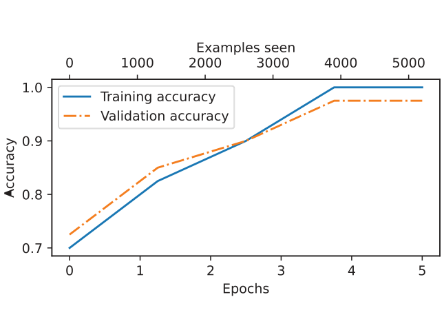
As we can see based on the sharp downward slope in figure 6.16, the model is learning well from the training data, and there is little to no indication of overfitting; that is, there is no noticeable gap between the training and validation set losses.
Choosing the number of epochs #
Earlier, when we initiated the training, we set the number of epochs to five. The num-
ber of epochs depends on the dataset and the task’s difficulty, and there is no uni-
versal solution or recommendation, although an epoch number of five is usually a
good starting point. If the model overfits after the first few epochs as a loss plot (see
figure 6.16), you may need to reduce the number of epochs. Conversely, if the trend-
line suggests that the validation loss could improve with further training, you should
increase the number of epochs. In this concrete case, five epochs is a reasonable
number as there are no signs of early overfitting, and the validation loss is close to 0.
Using the same plot_values function, let’s now plot the classification accuracies:
epochs_tensor = torch.linspace(0, num_epochs, len(train_accs))
examples_seen_tensor = torch.linspace(0, examples_seen, len(train_accs))
plot_values(
epochs_tensor, examples_seen_tensor, train_accs, val_accs,
label="accuracy"
)Figure 6.17 graphs the resulting accuracy. The model achieves a relatively high training and validation accuracy after epochs 4 and 5. Importantly, we previously set eval_iter=5
when using the train_classifier_simple function, which means our estimations of training and validation performance are based on only five batches for efficiency during training.
Now we must calculate the performance metrics for the training, validation, and test sets across the entire dataset by running the following code, this time without defining the eval_iter value:
train_accuracy = calc_accuracy_loader(train_loader, model, device)
val_accuracy = calc_accuracy_loader(val_loader, model, device)
test_accuracy = calc_accuracy_loader(test_loader, model, device)
print(f"Training accuracy: {train_accuracy*100:.2f}%")
print(f"Validation accuracy: {val_accuracy*100:.2f}%")
print(f"Test accuracy: {test_accuracy*100:.2f}%")The resulting accuracy values are
Training accuracy: 97.21%
Validation accuracy: 97.32%
Test accuracy: 95.67%The training and test set performances are almost identical. The slight discrepancy between the training and test set accuracies suggests minimal overfitting of the training data. Typically, the validation set accuracy is somewhat higher than the test set accuracy because the model development often involves tuning hyperparameters to perform well on the validation set, which might not generalize as effectively to the test set. This situation is common, but the gap could potentially be minimized by adjusting the model’s settings, such as increasing the dropout rate (drop_rate) or the weight_ decay parameter in the optimizer configuration.
6.8 Using the LLM as a spam classifier#
Having fine-tuned and evaluated the model, we are now ready to classify spam messages (see figure 6.18). Let’s use our fine-tuned GPT-based spam classification model. The following classify_review function follows data preprocessing steps similar to those we used in the SpamDataset implemented earlier. Then, after processing text into token IDs, the function uses the model to predict an integer class label, similar to what we implemented in section 6.6, and then returns the corresponding class name.
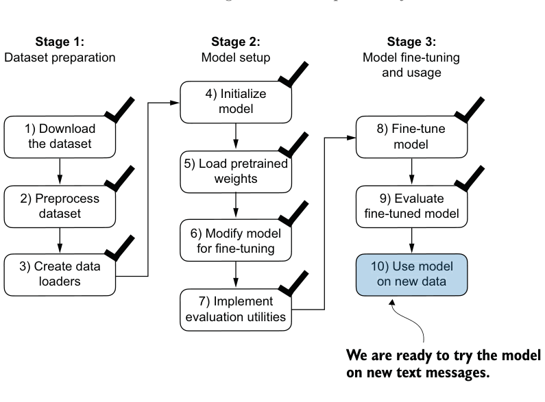
Listing 6.12Using the model to classify new texts
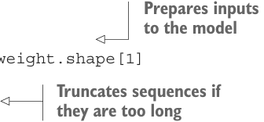
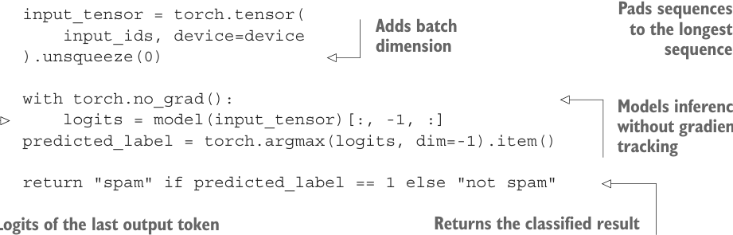
def classify_review(
text, model, tokenizer, device, max_length=None,
pad_token_id=50256):
model.eval()代码旁注 2 条
- Prepares inputs to the model
- Truncates sequences if they are too long
input_ids = tokenizer.encode(text)
supported_context_length = model.pos_emb.weight.shape[1]
input_ids = input_ids[:min( max_length, supported_context_length
)]
input_ids += [pad_token_id] * (max_length - len(input_ids))
代码旁注 6 条
- Pads sequences
- Adds batch to the longest
- dimension sequence
- Models inference without gradient tracking
- Returns the classified result
- Logits of the last output token
input_tensor = torch.tensor(
input_ids, device=device
).unsqueeze(0)
with torch.no_grad():
logits = model(input_tensor)[:, -1, :]
predicted_label = torch.argmax(logits, dim=-1).item()
return "spam" if predicted_label == 1 else "not spam"- There are different strategies for fine-tuning LLMs, including classification fine-tuning and instruction fine-tuning.
- Classification fine-tuning involves replacing the output layer of an LLM via a small classification layer.
- In the case of classifying text messages as “spam” or “not spam,” the new classification layer consists of only two output nodes. Previously, we used the number of output nodes equal to the number of unique tokens in the vocabulary (i.e., 50,256).
- Instead of predicting the next token in the text as in pretraining, classification fine-tuning trains the model to output a correct class label—for example, “spam” or “not spam.”
- The model input for fine-tuning is text converted into token IDs, similar to pretraining.
Let’s try this classify_review function on an example text:
text_1 = (
"You are a winner you have been specially"
" selected to receive $1000 cash or a $2000 award."
)
print(classify_review(
text_1, model, tokenizer, device, max_length=train_dataset.max_length
))The resulting model correctly predicts "spam". Let’s try another example:
text_2 = (
"Hey, just wanted to check if we're still on"
" for dinner tonight? Let me know!"
)
print(classify_review(
text_2, model, tokenizer, device, max_length=train_dataset.max_length
))The model again makes a correct prediction and returns a “not spam” label.
Finally, let’s save the model in case we want to reuse the model later without having to train it again. We can use the torch.save method:
torch.save(model.state_dict(), "review_classifier.pth")Once saved, the model can be loaded:
model_state_dict = torch.load("review_classifier.pth, map_location=device")
model.load_state_dict(model_state_dict)Summary#
- Before fine-tuning an LLM, we load the pretrained model as a base model.
- Evaluating a classification model involves calculating the classification accuracy (the fraction or percentage of correct predictions).
- Fine-tuning a classification model uses the same cross entropy loss function as when pretraining the LLM.
- The instruction fine-tuning process of LLMs
- Preparing a dataset for supervised instruction fine-tuning
- Organizing instruction data in training batches
- Loading a pretrained LLM and fine-tuning it to follow human instructions
- Extracting LLM-generated instruction responses for evaluation
- Evaluating an instruction-fine-tuned LLM
由 pdf2html2.py 从 bllm2.pdf 转换。插图为原书矢量图按区域渲染的截图，代码块带语法高亮，连字符断词已按全书词表还原。